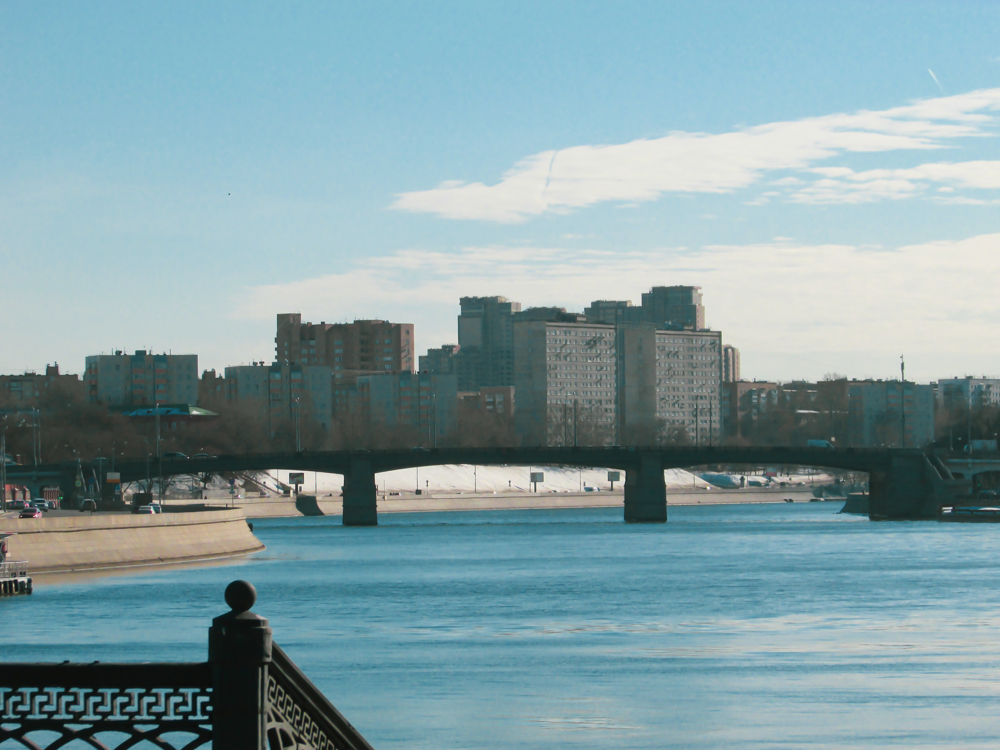
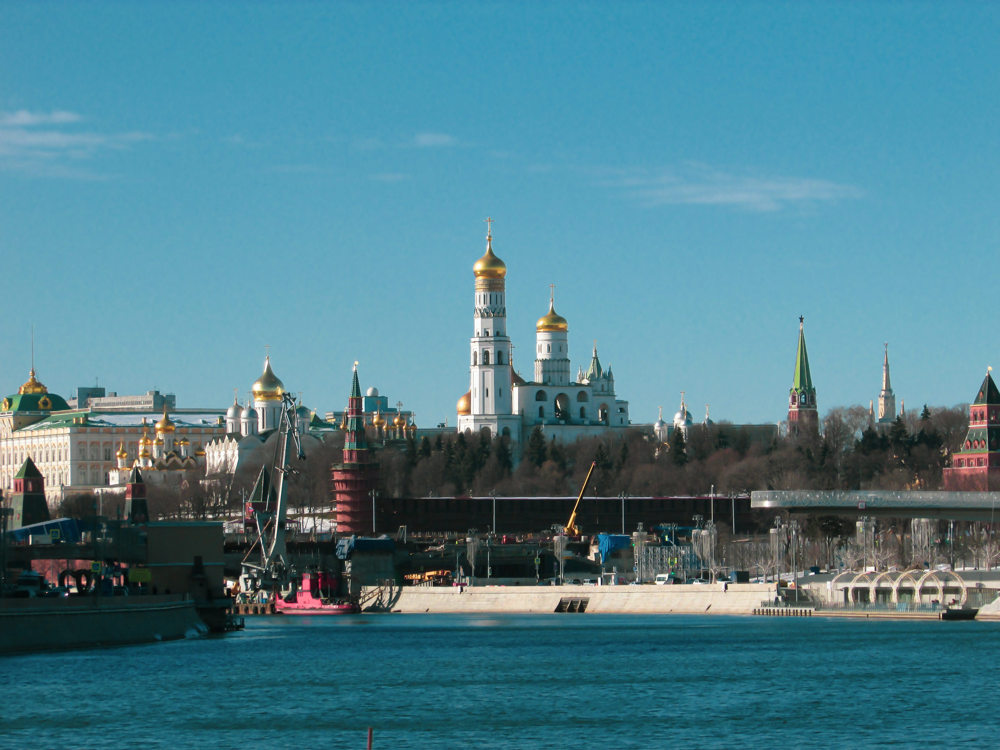
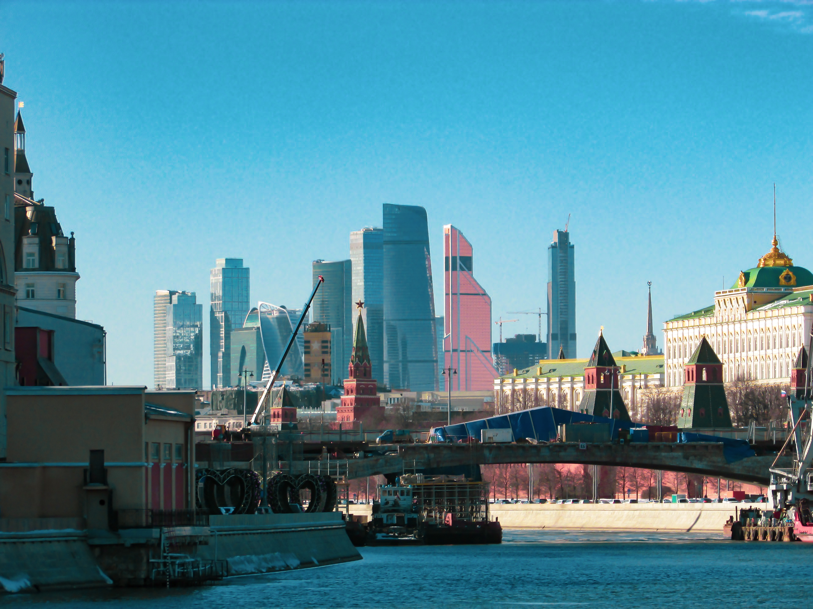
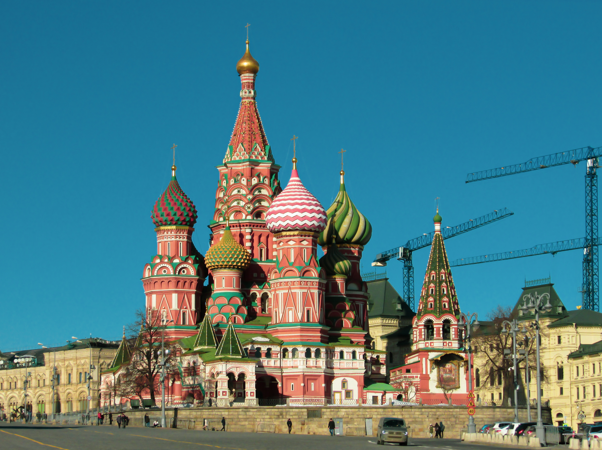
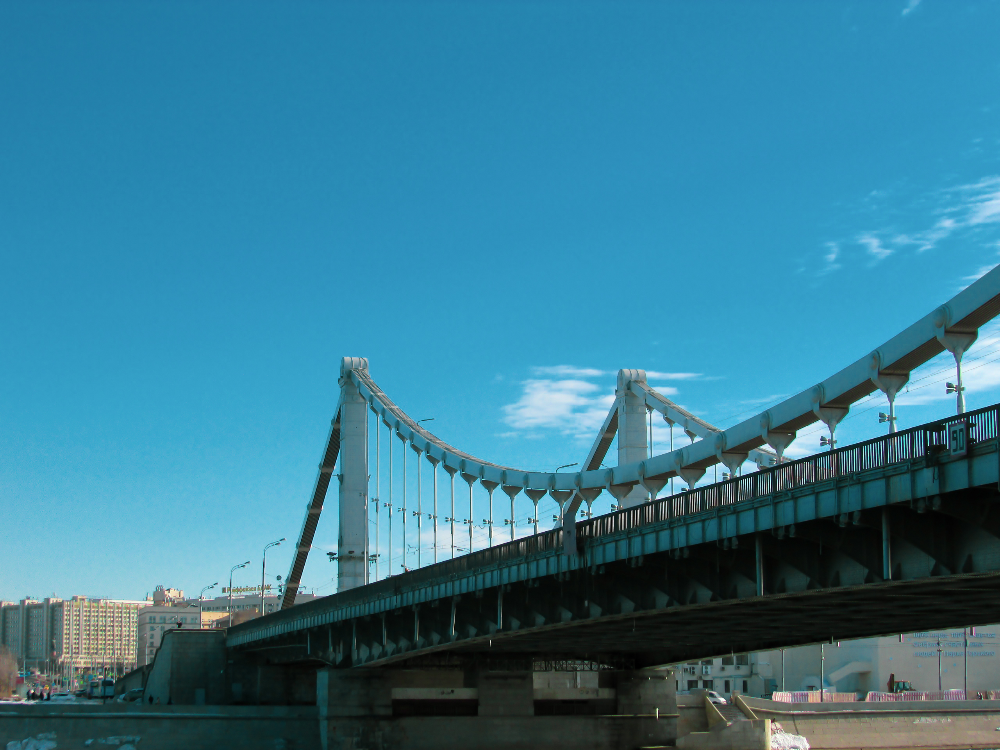
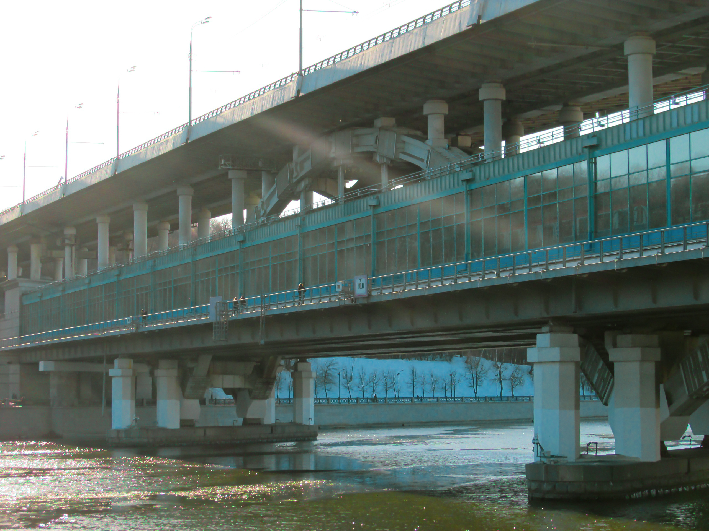
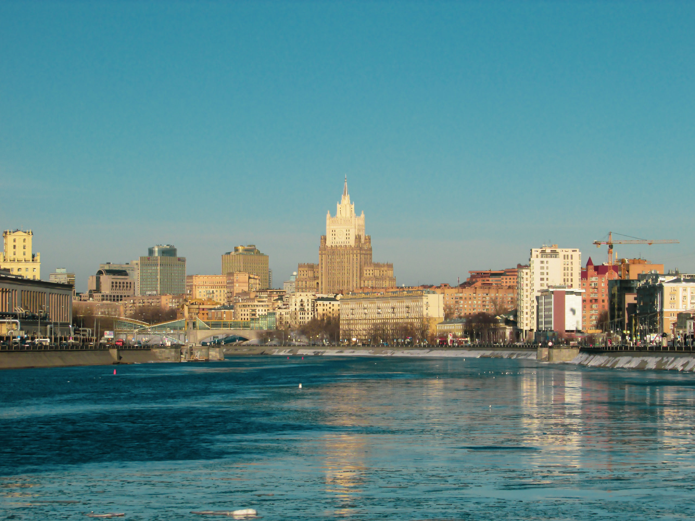
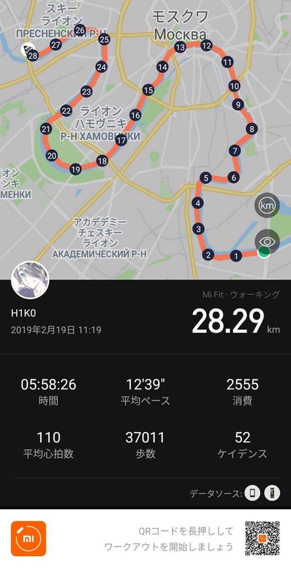

— Тадаима!
Вот я и дома.
Да, сегодня определенно один из лучших дней в моей жизни. И каникулы тоже лучшие.
А, забыл представиться. Меня Масахико Амано зовут. По-японски пишется 天人楽彦, переводится как «Принц Развлечений С Неба». 16-летний брюнет среднего роста, худощавого телосложения, с серо-зелено-голубыми глазами и слегка завышенной самооценкой. Будем знакомы!
Сегодня 19 февраля 2019 года. Практически полностью моя дата, поскольку 19 по-японски читается как «Хико». Я встал в 7 утра, проспав 9 часов и отлично выспавшись. С самого начала дня мое настроение было лучше некуда. И погода выдалась под стать бодрому и жизнерадостному настроению. Вчера вечером мы с моим другом Шином запланировали прогуляться по набережным Москвы, и встреча была назначена на без десяти одиннадцать у метро Коломенское, так что свободного времени утром у меня было достаточно много. Я перебрал фотки со вчерашней прогулки, обработал некоторые из них и выложил в сеть. Затем позавтракал, собрал рюкзак с едой, питьем, фотоаппаратом и павербанком, поболтал с мамой немножко и вышел.
Выйдя из дома, я направился к автобусной остановке, где откуда должен был доехать до метро Новокосино. Однако пришлось прождать так долго, что в итоге я прибыл на место назначения почти на двадцать минут позже условленного. Ну ладно, это не страшно — в конце концов, не в школу опоздал.
Шин уже ждал меня в переходе. Правда, не самом удобном для нашей ситуации, но это уже скорее мой косяк — я не уточнил это. От метро мы дошли до Нагатинской набережной, и наша прогулка началась у Нагатинского моста в 11:19. (Кстати, моя вчерашняя прогулка вокруг Садового кольца началась ровно в это же время. Совпадение?..)
")
Как видите, людей там почти не было. Через пять-десять минут пути они совсем пропали. Да и машины проезжали раз в две минуты. В общем, мы с Шином несколько минут чувствовали себя кем-то вроде «царей дороги».
")
Когда мы заканчивали второй километр, начался первый в нашей прогулке изгиб Москвы-реки. С него открывался классный вид на Нагатинский мост.
")
И на Нагатинский район тоже.
")
Но это было уже позади. Перед нами появился Даниловский мост. Звуки поездов МЦК были слышны в радиусе около километра от моста.
")
Кстати, видите на фотографии кусочек заснеженной суши? Там тусовались утки. Хлебушка для них у нас, к сожалению, не было.
")
Да и сама эта суша выглядела прикольно.
")
Вскоре после моста справа от нас открылся вид на строящийся ЖК ЗИЛАРТ.
, №1")
, №2")
А вот и второй изгиб реки. К тому времени мы прошли около 5 км. Все-таки на изгибах в тех местах лучшие виды.
, №1")
, №2")
Кстати, где-то там Шин у меня поинтересовался, сколько шагов мы уже прошли. Забыв, что это можно посмотреть и на телефоне, я полез в свой браслет и случайно нажал паузу… Хотел сделать идеальный трек… Но да ладно.
К тому времени, как ни странно, я захотел есть. С каждым километром это желание все возрастало и возрастало. И я по приколу сказал Шину: «А го челлендж: не есть ничего до Павелецкого моста!» Так и решили. Топал до Павелецкого моста с чуть ли не экспоненциально возрастающим голодом.
Вот мы и подошли к Павелецкому мосту.
— Смотри, забор снова железный! — заметил Шин.
И правда.
Когда мы начинали прогулку от Нагатинского моста, он тоже был железный, но где-то то ли на Павелецкой, то ли на Дербеневской набережной стал каменным.
— В следующий раз, когда тут пойдем, будем отмечать точки смены забора, — предложил я.
Обернемся назад.
")
Дошли! Challenge complete, как говорится. Взобравшись на Павелецкий мост, я спокойно достал из рюкзака пачку печенья и за раз слопал всю. Уже было пройдено 10 км, оставалось 18. И с тех пор практически до конца дня у меня по совершенно непостижимой причине не было аппетита. У меня, у которого обычно этот аппетит постоянно на максималках!
Сходим с Павелецкого моста и идем по Гончарной набережной в сторону Кремля. Я был в полном порядке, а у Шина уже начали уставать ноги. Но он стойко держался.
А вот и Кремль показался.
С тех мест была видна и наша цель.
— Так близко и так далеко… — протянул Шин.
Я промолчал. В тот раз.
Проходим парк Зарядье.
")
Покровский Собор.
Ну и, конечно же, Кремль.
")
— А прикинь, вот такую прогулку устроить с тянкой, — размечтался Шин.
— Давно тешусь такими мыслями, — подхватил я.
— Вот представь, идете вы такие киломов десять, тянка устала и голову на тебя кладет… Милота!
— Ага, а потом, вымотавшись в конец, просит тебя ее понести. И ты такой думаешь: «Вот и руки заодно подкачаю!»
— Ахаха! А вслух скажешь: «Ты такая пушинка!»
Кремль пройден. Когда завершился самый большой изгиб Москвы-реки, показался Крымский мост. Мы шли уже практически на юг, солнце светило в глаза, поэтому мост я сфотографировал уже вблизи.
Полпути пройдено. Топаем дальше. Около здания генштаба Министерства Обороны РФ мы встретили одну очень борзую ворону. Ну реально, вообще ничего не боится. А на фотках получилась фотогеничнее некоторых моделей.
, №1")
, №2")
Ну и верхушка самого здания Минобороны.
")
Дошли до Метромоста.
А дальше пошли чисто пешеходные дорожки. Ни шума машин, ни толпы, слева и впереди лес на Воробьевых Горах — красота! И заледеневший талый снег на дорогах, которым так приятно хрустеть.
А вот и снова показалась наша цель! И в каком ракурсе!
")
— Так близко и так далеко… — снова протянул Шин.
На сей раз я не удержался.
— На самом деле нам осталось идти значительно больше, — спокойно заявил я.
— Хватит рушить мои надежды!
Абсолютно резонная реакция.
Итак, завершился второй по величине изгиб Москвы-реки в нашей прогулке.
Пройдено около 22 километров. У Шина уже конкретно устали и болят ноги, у меня только начало слегка сводить коленки.
— Если так тяжело, сядь на Киевскую или Смоленскую, — сочувственно посоветовал я.
Не сел.
Продолжил идти.
")
Мост Хмельницкого! Топ тема! Надо будет туда тоже сгонять, в другой раз.
Последний изгиб. Осталось немного. Скоро будет финишная прямая. Так я подбадриваю своего уже прихрамывающего приятеля.
")
Вот уже и Москва-Сити видно! Совсем близко! Однако снова ближе, чем на самом деле.
")
Пара километров — и пришли. Москва-Сити.
")
— Дошли! — радостно воскликнул Шин. — Спасибо солнышку, что освещало наш путь, спасибо ветерку, подталкивавшему нас вперед, спасибо асфальту, помогавшему нам идти!
Осталось только найти вход на станцию МЦК Деловой Центр, и прогулка завершена. В итоге мы прошли чуть больше 28 км за почти 6 часов.
Теперь смело можно сесть и отдохнуть. Отдыхали, пока ехали от Делового Центра до Шоссе Энтузиастов, проезжая по Бережковскому, Андреевскому и Даниловскому мостам, а потом пришлось встать…
— Чтоб я еще раз с тобой гулять пошел! — выругался Шин в переходе.
— Ха-ха, то есть к Полтосу у тебя тоже интерес пропал? — рассмеялся я.
Шесть вечера, час пик. В метро нам, ясное дело, сесть не дали. Ну и ладно, все равно только две станции ехать. Только духотища дикая была.
В Новогиреево мы с Шином расстались: он поехал в школу, а я пошел пешком домой. Да-да, пешком, всего-то мне мало.
Честно скажу, это был один из лучших дней в моей жизни. За эти шесть часов прогулки от Нагатинского моста до Москва-Сити я будто прожил целую жизнь. Столько впечатлений, столько новых видов и старых, но в других цветах! До сих пор никак не отойду от кайфа от всего этого.
Маршрут мне так понравился, что я его решил повторить еще минимум два раза: весной и летом этого года. Виды будут, возможно, те же, но уже сильно отличающиеся от тех, что я видел сегодня. На следующие два дня погоду обещают плохую — буду отдыхать. С субботы по вторник включительно прошел более 75 км — слишком много даже для меня.
Многие сейчас недоумевают, в чем кайф от бесцельного скитания по городу?
Отвечу за себя.
Я ловлю кайф от ходьбы, от видов и их смены, от ветерка, от солнца, даже когда оно слепит глаза — от всего! Особенно я кайфую с ощущения полной свободы, будто вся Москва моя. Захотел — пошел туда, захотел — пошел в другую сторону. Вот и все.
Черт возьми, символизм этой прогулки просто зашкаливает! Дата 19.02.2019, начало в 11:19, пройдено 19 набережных. На самом деле это был полностью мой день. И я считаю, что провел его наилучшим образом.
© Text and photos by Masahiko AMANO a.k.a. H1K0